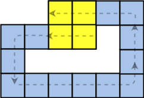

The Integral Image is one of the most important tools to accelerate features computation in many object detection applications. They are called Summed Area Tables and although they were proposed in 1984 by Frank Crow, it was intensively used within Viola–Jones object detection framework in 2001 [1].
The integral image of a region at the point (x,y) in the summed area table is the sum of all pixels above and to the left of (x,y) including i(x,y), according to equation (1), where i(x,y) is the value of the pixel at the position (x,y).
Equation (1){kind=link}
The computation of the integral image II(x,y) can be made recursively as can be seen in equation (2):
Equation (2){kind=link}
Let's try an example to make things clear. Suppose that our image is defined in the matrix of the Figure (1).
 Figure (1): a 4x4 matrix
Figure (1): a 4x4 matrix
To calculate the integral image at the point (2,1), using equation (2), we have II(2,1) = i(2,1)+II(1,1)+II(2,0)-II(1,1) = 7+14+6-3 = 24, as can be seen in Figure (2).
 Figure (2): integral image computed recursively
Figure (2): integral image computed recursively
The advantage of the summed area table is that in the Integral domain the computation effort to calculate the area of a rectangle is just four arrays references, while in the original domain this complexity is mxn sums, where mxn is the number of pixels inside the rectangle.
To illustrate the compuation of the area of the rectangle defined in the region 2<=x<=4, 1<=y<=3, let be S the sum of the rectangle. In the original image, S = 2+3+4+6+7+8+2+3+4=39. However, once the integral image is done, to calculate the same area in the Integral domain the formula S=D+A-B-C = 46+0-0-7=39 can be used as can be seen in Figure (3). This reduces the computational complexity from O(mxn) to O(1).
 Figure (3): computaion of the rectangle area
Figure (3): computaion of the rectangle area
Hardware implementation
The Integral Image II can be defined as a convolution of the matrix S with the image I as can be seen in equation (3):
Equation (3){kind=link}
Similar to the Sobel Filter, the Integral Image has a structure of sliding window as can be seen in Figure (4).
 Figure (4): Circular buffer structure of the integral image{kind=link}
Since the kernel that is being convolved to the image is a matrix 2x2, the circular buffer needs to store just one line of the image.
 Figure (5): numerical example of the convolution
Figure (5): numerical example of the convolution
The SystemVerilog code of the Integral Image and its testbench can be seen below:
parameter W = 8; parameter BUFFER_SIZE = 2; parameter ROW_SIZE = 4; parameter W_SUM = $clog2(ROW_SIZE*ROW_SIZE*(1<<W)); module integral_image(input logic clock, reset, input logic [W-1:0]new_sample, output logic [W_SUM-1:0] S); logic [W_SUM-1:0] s[BUFFER_SIZE][BUFFER_SIZE]; logic [W-1:0] prevS; logic [W_SUM-1:0] buffer[ROW_SIZE]; logic [$clog2(ROW_SIZE)-1:0] ptr, next_ptr; logic [$clog2(ROW_SIZE):0] row_counter; always_comb begin if(reset) S <= 0; else S <= prevS+s[1][0]+s[0][1]-s[0][0]; end always_comb begin if(ptr+1 < ROW_SIZE) next_ptr <= ptr+1; else next_ptr <= 0; end always_ff @(posedge clock) begin if(reset)begin ptr <= 0; row_counter <= 0; s[0][0] <= 0; s[0][1] <= 0; s[1][0] <= 0; s[1][1] <= 0; for(int i = 0; i < ROW_SIZE; i++) buffer[i] <= 0; end else begin prevS <= new_sample; s[1][0] <= S; buffer[ptr] <= S; s[0][1] <= buffer[next_ptr]; s[0][0] <= s[0][1]; ptr <= next_ptr; if (ptr == 0) begin if(row_counter < ROW_SIZE) row_counter <= row_counter+1; else row_counter <= 0; s[0][0] <= '0; s[1][0] <= '0; end end end initial begin $monitor("dut => new_sample = %d prevS = %d s[1][0] = %d s[0][1] = %d s[0][0] = %d buffer[ptr] = %d S = %d at time = %d (ptr=%d, next_ptr = %d, row_counter = %d)", new_sample, prevS, s[1][0], s[0][1], s[0][0], buffer[ptr], S, $time, ptr, next_ptr, row_counter); end endmodule: integral_image
module top; logic clock, reset; logic [W-1:0] X, Y; logic [W_SUM-1:0] mem[ROW_SIZE][ROW_SIZE], sum_array[ROW_SIZE][ROW_SIZE]; int i, j, pos_x, pos_y, WINDOW_SIZE, A, B, C, S; always_comb begin mem[0][0:3] = {8'd1,8'd2,8'd3,8'd4}; mem[1][0:3] = {8'd5,8'd6,8'd7,8'd8}; mem[2][0:3] = {8'd1,8'd2,8'd3,8'd4}; mem[3][0:3] = {8'd5,8'd6,8'd7,8'd8}; end initial begin pos_x = 1; pos_y = 0; WINDOW_SIZE = 3; clock = 0; reset = 1; #15 reset = 0; $display("starting simulation ..."); //$monitor("X = %d, Y = %d at %d", X, Y, $time); for(i=0;i<ROW_SIZE;i++) for(j=0; j<ROW_SIZE;j++)begin @(posedge clock)begin X = mem[i][j]; sum_array[i][j] = Y; $display(X, sum_array[i][j]); end end @(posedge clock) sum_array[i][j] = Y; shift_array(); do_sum(pos_x, pos_y, WINDOW_SIZE); $display("%d %d %d %d", A, B, C, S); $finish; end always #5 clock = !clock; integral_image m_integral_image(.clock(clock), .reset(reset), .new_sample(X), .S(Y)); function shift_array(); for(int k1 = 0; k1<=ROW_SIZE-1;k1++)begin sum_array[k1][0:ROW_SIZE-2] = sum_array[k1][1:ROW_SIZE-1]; sum_array[k1][ROW_SIZE-1] = sum_array[k1+1][0]; end //sum_array[3][3] = Y; endfunction: shift_array function do_sum(input int pos_x, pos_y, WINDOW_SIZE); A = (pos_x >=1 && pos_y >=1)? sum_array[pos_y-1][pos_x-1] : 0; B = (pos_y >=1) ? sum_array[pos_x+WINDOW_SIZE-1][pos_y-1] : 0; C = (pos_x >= 1) ? sum_array[pos_y+WINDOW_SIZE-1][pos_x-1] : 0; S = sum_array[pos_y+WINDOW_SIZE-1][pos_x+WINDOW_SIZE-1]+A-B-C; endfunction: do_sum endmodule: top
Play it by yourself on EDA Playground.
Also available in GitHub.
References:
[1] https://en.wikipedia.org/wiki/Summed_area_table